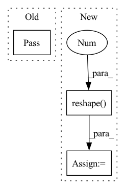

Pattern ID :28070

Before Change
def _read_web_data(self):
url = "placeholder"
pass
def _get_edges(self):
pass
After Change
means = np.mean(X, axis=(0, 2))
X = X - means.reshape(1, -1, 1)
stds = np.std(X, axis=(0, 2))
X = X / stds.reshape(1, -1, 1)
self.A = A
self.X = X
In pattern: SUPERPATTERN
Frequency: 3
Non-data size: 3
Instances
Fragment ID: 83018480
Project Name: benedekrozemberczki/pytorch_geometric_temporal
Commit Name: 326f95b56716c080a7792a204372b35942b7acca
Time: 2021-02-21
Author: pms69@cam.ac.uk
File Name: torch_geometric_temporal/data/dataset/metr_la.py
M Class Name: METRLADatasetLoader
N Class Name: METRLADatasetLoader
M Method Name: _read_web_data(1)
N Method Name: _read_web_data(1)
M Parent Class: object
N Parent Class: object
M File Name: torch_geometric_temporal/data/dataset/metr_la.py
N File Name: torch_geometric_temporal/data/dataset/metr_la.py
M Start Line: 18
M End Line: 18
N Start Line: 20
N End Line: 41
'>
Before Change
gallery_feats = feat
else:
gallery_feats = np.concatenate((gallery_feats, feat), 0)
pass
sys.stdout.write(
"\r>> LoadGallery[{}/{}] ".format(i, gallery_len))
sys.stdout.flush()
After Change
group_inter, final, group_prob, group_label = model(torch_loader(cv2.imread(file_path)).unsqueeze(0))
feat = final / torch.norm(final, p=2, keepdim=False)
feat = feat.detach().cpu().reshape(1, 256).numpy()
if isinstance(gallery_feats, dict) is True:
gallery_feats = feat
'>
Fragment ID: 83018466
Project Name: leoluopy/groupfacepytorch
Commit Name: 20388625302d7211146c80f4badced123c62fe30
Time: 2020-12-21
Author: lpy1990fff
File Name: train.py
M Class Name: AnonimousClass
N Class Name: AnonimousClass
M Method Name: load_gallery(2)
N Method Name: load_gallery(2)
M Parent Class:
N Parent Class:
M File Name: train.py
N File Name: train.py
M Start Line: 24
M End Line: 29
N Start Line: 25
N End Line: 32
'>
Before Change
:return:
pass
def celoss(outputs, targets):
The cross-entropy loss as explained in the slides.
After Change
xtl, xsl = xtrain.shape[0], xtest.shape[0]
if flatten:
xtrain = xtrain.reshape(xtl, -1)
xtest = xtest.reshape(xsl, -1)
if not final: // return the flattened images
return (xtrain[:-5000], ytrain[:-5000]), (xtrain[-5000:], ytrain[-5000:]), 10
'>
Fragment ID: 83018476
Project Name: dlvu/vugrad
Commit Name: 468d342ee4d8d610849123ce7a2dfb392ba6492b
Time: 2020-10-07
Author: git@peterbloem.nl
File Name: vugrad/functions.py
M Class Name: AnonimousClass
N Class Name: AnonimousClass
M Method Name: load_mnist(2)
N Method Name: load_mnist(1)
M Parent Class:
N Parent Class:
M File Name: vugrad/functions.py
N File Name: vugrad/functions.py
M Start Line: 41
M End Line: 41
N Start Line: 36
N End Line: 59